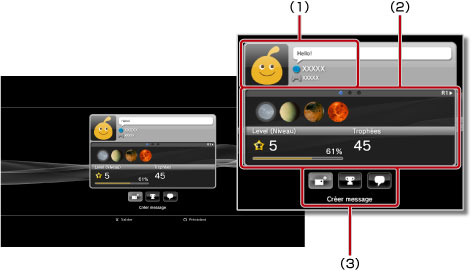
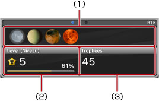
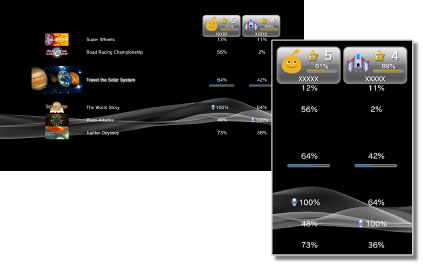

Amis > Liste d'amis > Affichage des profils
Affichage des profils
Pour utiliser cette fonctionnalité, vous devrez peut-être mettre à jour le logiciel système.
Vous pouvez afficher votre profil ou le profil d'un Ami. Pour afficher le profil d'un Ami, sélectionnez son avatar.

(1) |
Affichage de l'état |
|---|---|
(2) |
Informations |
(3) |
Panneau de configuration |
Conseil
Pour plus d'informations sur l'affichage de l'état, consultez  (Amis) > [Liste d'amis] > [Vérifier l'état] dans le présent mode d'emploi.
(Amis) > [Liste d'amis] > [Vérifier l'état] dans le présent mode d'emploi.
Affichage d'informations sur un écran de profil
Un profil contient notamment des informations relatives à la progression des trophées, au nombre de trophées obtenus pour chaque degré, ainsi que des informations détaillées relatives à vos Amis. Vous pouvez parcourir les informations en appuyant sur la touche L1 ou R1.

(1) |
Trophées récemment obtenus |
|---|---|
(2) |
Niveau actuel et progression vers le niveau suivant |
(3) |
Nombre total de trophées obtenus |
Utilisation du panneau de configuration sous [Profil]
Pendant l'affichage d'un profil, vous pouvez exécuter différentes opérations à l'aide du panneau de configuration. Les icônes affichées sur le panneau de configuration varient selon l'état de l'Ami.
 |
Menu (titre du jeu) | Pour afficher la liste des actions pouvant être exécutées dans le jeu en cours. |
|---|---|---|
 |
Ajouter un ami | Pour envoyer une demande afin d'envoyer quelqu'un à votre Liste d'amis. |
 |
Liste de messages | Pour afficher la liste des messages que vous avez échangés avec cet Ami. |
 |
Créer message | Pour créer un nouveau message. |
 |
Comparer les trophées | Pour comparer votre progression de trophées avec l'état d'un Ami. |
 |
Démarrer nouveau chat | Pour démarrer un chat. |
 |
Réponse à une demande d'ajout d'un ami | Pour ouvrir le message demandant à une personne de l'ajouter en tant qu'Ami et d'envoyer une réponse. |
 |
Ajouter à la liste des personnes ignorées | Pour ajouter un Ami à votre liste des personnes ignorées. |
 |
Retirer de la liste des personnes ignorées | Pour supprimer un Ami de votre liste des personnes ignorées. |
Conseils
- Le panneau de configuration ne peut pas être masqué.
- Le panneau de configuration est masqué lors de l'affichage de votre propre profil.
Modification de la couleur de fond d'écran pour l'écran de votre profil
Sélectionnez l'onglet supérieur gauche dans l'écran du profil, puis appuyez sur la touche  pour afficher la palette de couleurs. Dans la palette, sélectionnez la couleur de fond d'écran à appliquer à l'écran de votre profil.
pour afficher la palette de couleurs. Dans la palette, sélectionnez la couleur de fond d'écran à appliquer à l'écran de votre profil.

Conseil
Vous ne pouvez pas modifier la couleur de fond d'écran des écrans de profil d'autres personnes.
Comparaison de l'état d'obtention de trophées
1. |
Sélectionnez l'avatar de l'Ami avec lequel vous souhaitez comparer l'état d'obtention des trophées sous |
|---|---|
2. |
Sélectionnez  |
3. |
Sélectionnez un jeu.
|